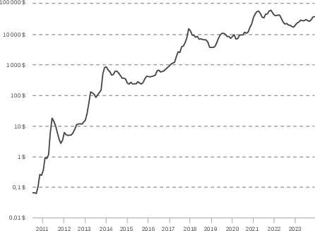

2 A Conflict-Ridden Growth
Ap[^lettrine]ter an initial period of unity centered around the figure of Satoshi Nakamoto from 2009 to 2011, the Bitcoin community rapidly reorganized without his mediation, in a decentralized manner. Gavin Andresen was appointed as the project’s lead, but he lacked the moral authority to impose a clear vision of Bitcoin on others and preferred conciliation. As a result, the community found itself embroiled in numerous internal conflicts that intensified with the influx of new participants during various speculative waves. The developers’ quarrel over Pay to Script Hash in early 2012 was merely a precursor to much deeper divisions.
Throughout its history, the Bitcoin ecosystem has undergone four major developments that have led to significant splits within the community. These evolutions include: the financialization of the economy, characterized by the rise of trusted intermediaries; reaching the transactional capacity limit of the blockchain, highlighting the system’s scalability issues (which gave rise to the infamous “block size war”); the surge of alternative cryptocurrencies, met with diverse reactions by Bitcoin users; and institutional integration by state entities, raising questions about how to engage with authorities.
Bitcoin thus experienced a conflict-ridden growth that shaped what it is today and how we perceive it. This chapter focuses on these four divisions.
Financialization
The financialization of Bitcoin is marked by the professionalization of exchange activities between bitcoin and state currencies—formally known as currency exchange—and the entry of traditional players into the ecosystem. This phase is accompanied by an unprecedented price surge, increased market liquidity, tightened regulatory constraints, and a shift in the dominant discourse within the community.
The need for currency exchange services became apparent very quickly. Generally, people own, earn, and spend fiat currencies like the dollar or the euro, not bitcoin. Thus, even though Bitcoin is theoretically independent of the traditional system, bridges between the two worlds are essential, at least temporarily.
Starting in 2011, there was an unprecedented rise in marketplaces—online exchanges that automatically process clients’ buy and sell orders. Notably, Mt. Gox emerged as a pivotal platform for converting bitcoins to dollars, despite a rocky start. It quickly became a central hub, handling a daily volume of at least $200,000 and sometimes surpassing a million dollars. Other platforms like Bitstamp, Bitcoin-Central, TradeHill, and BTC-e also emerged but couldn’t compete with Mt. Gox, which continued to account for 90% of the total market volume throughout its existence.
In addition to spot trading platforms (where actual assets are exchanged), margin trading platforms began to appear, allowing users to trade contracts, leverage positions, and engage in short selling. The first of these was Bitcoinica, which had a tumultuous existence from September 2011 to May 2012 before being succeeded by Bitfinex in October 2012.
Simultaneously, a service called BitInstant was developing in the United States. Co-founded in June 2011 by Gareth Nelson and Charlie Shrem, its role was to facilitate transfers to and from exchange platforms. The company acted as an intermediary between clients and platforms, enabling instant deposits and withdrawals for a fee. Charlie Shrem, a young New Yorker of Syrian Jewish descent, served as CEO and quickly became the company’s leading figure, although others like Roger Ver and Erik Voorhees were also involved. By early 2012, BitInstant offered various money transfer methods (Liberty Reserve, Dwolla, Paxum, cash deposits, etc.) to interact with major platforms in the ecosystem, including Japan-based Mt. Gox. By April 2013, BitInstant’s activity accounted for about 30% of the total volume traded on exchange platforms1.
1 Colleen Taylor, “With $1.5M Led By Winklevoss Capital, BitInstant Aims To Be The Go-To Site To Buy And Sell Bitcoins”, TechCrunch, May 17, 2013: https://techcrunch.com/2013/05/17/with-1-5m-led-by-winklevoss-capital-bitinstant-aims-to-be-the-go-to-site-to-buy-and-sell-bitcoins/.
2 Coinbase.com website capture, September 20, 2012: https://web.archive.org/web/20120920091115/https://coinbase.com/.
But marketplaces weren’t the only services flourishing. First, custodial applications that allowed users to easily send and receive bitcoins without managing their own holdings began to develop, with MyBitcoin being a pioneer between 2010 and 2011. Coinbase, founded in May 2012 by Brian Armstrong and Fred Ehrsam, started as a “hosted Bitcoin wallet”2 and gradually integrated typical exchange functionalities over the years.
Second, payment processors emerged, enabling merchants to receive bitcoins and instantly sell them to avoid volatility. BitPay, founded in May 2011 by Tony Gallippi and Stephen Pair, quickly became a go-to solution for many merchants.
Third, peer-to-peer exchange services also multiplied, allowing individuals to swap bitcoins using various payment methods, including in-person cash exchanges. The most famous is LocalBitcoins, founded in June 2012 by Jeremias Kangas, which inspired other similar platforms. Similarly, over-the-counter (OTC) markets developed, allowing wealthier individuals to conduct large private trades without immediately impacting market prices.
Thus, the range of financial services expanded considerably between 2012 and 2013, driven by strong demand from clients increasingly eager to acquire bitcoin. This demand was evidenced by Bitcoin’s appearance in popular culture, notably inaugurated by the January 15, 2012, episode of The Good Wife, which focused entirely on Bitcoin3.
3 The Good Wife, Season 3 Episode 13: “Bitcoin for Dummies,” January 15, 2012.
Interest from traditional financial players made a significant difference. Wealthy investors began to take notice of bitcoin due to its limited supply (the famous 21 million cap) and its technologically disruptive potential. They invested not only in bitcoin but also in ecosystem companies.
Barry Silbert, a Wall Street aficionado who made his fortune with SecondMarket—a company facilitating secondary market asset trading—became interested in bitcoin in 2012 and purchased hundreds of thousands of dollars’ worth. He later founded Grayscale Investments in 2013 and the Digital Currency Group in 2015.
Twin brothers Tyler and Cameron Winklevoss, known for their dispute with Mark Zuckerberg over Facebook’s creation (settled for $65 million), learned about Bitcoin in August 2012 through David Azar, an associate of Charlie Shrem. After meeting Shrem, they were convinced to invest in bitcoin and later invested in his company BitInstant in May 2013. They eventually founded the Gemini exchange platform.
Argentine entrepreneur and philanthropist Wences Casares bought bitcoin in February 2013 and later founded Xapo, now one of the world’s largest bitcoin custodians for individuals.
This financialization brought a substantial influx of money but also shifted the discourse. Due to its fixed monetary policy, bitcoin was increasingly seen as an investment—a profit-generating asset due to the growth of its economy. Consequently, it was less viewed as a currency enabling value exchange between individuals without bank or state intervention.
Unlike cypherpunks and libertarians, the new investors weren’t particularly anarchistic, often belonging to the traditional financial world and adhering closely to regulations. For them, it was necessary for Bitcoin’s most controversial uses to disappear for it to develop and reach the general public and institutional investors. Specifically, they frowned upon the Silk Road marketplace, which at the time accounted for 10–20% of Bitcoin’s economic activity4 and gave Bitcoin its reputation as the “Internet’s drug money.” The trend was thus to improve the cryptocurrency’s image—a strategy initially set in motion by Satoshi Nakamoto himself between 2010 and 2011, as discussed in Chapter 1.
4 This animosity toward Silk Road was reflected in Tyler Winklevoss’s remarks a few weeks after the platform’s fall: “Prices are double what they were before Silk Road’s closure. The demand for using bitcoins for illicit activities was clearly almost non-existent.”—Matthew J. Belvedere, “Bitcoin is nearly halfway to the $400 billion value predicted by the Winklevoss twins four years ago”, CNBC, November 12, 2013: https://www.cnbc.com/2013/11/12/the-winklevoss-brothers-bitcoin-worth-100-times-more.html.
5 Bitcoin Foundation, Developing a More Open Economy, 2013 archive: https://web.archive.org/web/20130702232207/https://bitcoinfoundation.org/about/.
In this vein, the Bitcoin Foundation was established in September 2012. Modeled after the Linux Foundation, it was a consortium of ecosystem companies aimed at funding the software infrastructure of the protocol, lobbying regulators, and improving Bitcoin’s public image5. It was managed by key ecosystem figures: Peter Vessenes (CEO of CoinLab), Gavin Andresen (Bitcoin’s lead developer), Mark Karpelès (CEO of Mt. Gox), Jon Matonis (cryptographer and economist), Patrick Murck (a lawyer specializing in virtual currencies), and Charlie Shrem (CEO of BitInstant).
On November 28, 2012, the first “halving” occurred: the protocol’s monetary creation was halved, reducing the block reward from 50 bitcoins to 25 bitcoins, lowering the annualized issuance rate to 12.5%. The transition went smoothly. A few days later, Matt Whitlock created a simple graph visualizing the evolution of bitcoin creation over time6 (see Figure 2.1). This confirmed the shift in focus from uncensorability to scarcity.
6 Matt Whitlock, “[CHART] Bitcoin Inflation vs. Time”, December 13, 2012, 15:08:08 UTC: https://bitcointalk.org/index.php?topic=130619.msg1397456#msg1397456.

The increased demand and decreased supply growth rate led to a noticeable rise in bitcoin’s price. While it hovered around $5 during the first part of 2012, it climbed to $13 in August and stabilized at that level by year’s end. In 2013, its growth became exponential: surpassing $20 in January, it broke the previous high of $30 in February, and eventually reached $266 on Mt. Gox in April.
Symbolically, this price surge coincided with the collapse of Cypriot banks. At that time, the financial crisis was in full swing on the island, prompting the financial system to take drastic measures. On March 16, 2013, banks limited customer withdrawals. On the 25th, the Cypriot government and the EU decided (without prior legal framework) that the Bank of Cyprus had to be internally recapitalized through a partial tax on deposits over €100,000. The Laiki Bank, the country’s second-largest bank, was dismantled following its bankruptcy, and holdings over €100,000 were simply confiscated. This event demonstrated Bitcoin’s utility as “digital gold” that can be directly owned and isn’t subject to fractional-reserve banking constraints7.
7 On this occasion, GoldMoney and Bitcoin Magazine co-produced a documentary titled Cyprus: A Wake Up Call, collecting testimonies from Cypriots affected by the crisis. See on YouTube: https://www.youtube.com/watch?v=mGGlYnxSFWM.
8 Two corrupt FBI agents exploited the investigation to steal over 20,000 bitcoins (about $350,000) and staged an assassination.—Ludovic Lars, “Murders, scams, and bitcoin thefts—The dark side of Silk Road”, Le Journal du Coin, June 27, 2021: https://journalducoin.com/analyses/cote-obscur-silk-road/.
Meanwhile, developments were also unfolding with Silk Road. The U.S. intelligence investigation, which began in June 2011 following Adrian Chen’s Gawker article and Senators Chuck Schumer and Joe Manchin’s calls to shut down the platform, started bearing fruit. After lengthy research and some questionable actions by investigators8, Ross Ulbricht, the platform’s founder, was suspected by June 2013. Gary Alford, an IRS agent, uncovered the trail by finding Ross’s initial announcement on the Bitcoin forum and linking it to his email address, which contained his real name. In July 2013, Silk Road’s server was seized by Icelandic police and a copy was shared with U.S. agencies. The history contained a connection from an IP address in San Francisco, near Ross’s residence. In September, armed with this information, Ross was identified.
Silk Road’s downfall occurred in early fall 2013. On October 1, Ross Ulbricht was apprehended by FBI agents in a San Francisco library, with his session open on the platform. The following day, the website was shut down, causing a stir in the community. Bitcoin’s price, which had been stabilizing around $125 in previous days, plummeted to a low of $85. Between October 2 and 25, nearly 174,000 bitcoins belonging to Ross were seized by federal agencies—a treasure worth about $31 million at the time9.
9 29,656.52080180 BTC were sent to address 1F1tAaz5x1HUXrCNLbtMDqcw6o5GNn4xqX between October 2 and 16, while 144,336.39429472 BTC were transferred to address 1FfmbHfnpaZjKFvyi1okTjJJusN455paPH on October 25.—U.S. Attorney’s Office, Southern District of New York, Manhattan U.S. Attorney Announces Seizure of Additional $28 Million Worth of Bitcoins Belonging to Ross William Ulbricht, Alleged Owner and Operator of “Silk Road” Website, October 25, 2013: https://www.justice.gov/usao-sdny/pr/manhattan-us-attorney-announces-seizure-additional-28-million-worth-bitcoins-belonging.
10 During sentencing, Judge Katherine Forrest stated: “I make this judgment mindful of the crimes you committed and the need to send the strongest possible message. There must be no doubt that disobedience of the law will not be tolerated. There must be no doubt that no one is above the law, no matter one’s education or privileges.”—Ross Ulbricht’s sentencing transcript, February 4, 2015: https://freeross.org/wp-content/uploads/2018/02/Doc_36_Jan_12_Vol_VI_Appendix_A1314-A1554.pdf#page=240.
Others associated with Silk Road were arrested and convicted in the following years. Charlie Shrem was apprehended on January 27, 2014, by federal agents (FBI, IRS, DEA) and charged with facilitating money laundering through his company BitInstant. In December 2014, he was sentenced to two years in prison for illicit transfers. Ross Ulbricht was sentenced to two life terms plus 40 years, all for non-violent charges, explicitly to make an example of him10.
Despite Silk Road’s collapse representing the destruction of a significant portion of Bitcoin’s economy, the price rebounded, aligning with the expectations of some major investors. Renewed enthusiasm for Bitcoin led to another price surge and new highs. Stabilizing above $100, the price gradually increased in the latter half of October, surpassing the previous high of $266 in early November. From there, it skyrocketed, reaching a new all-time high of $1,240 on Mt. Gox on December 4, 2013. This speculative episode prompted many media outlets to discuss Bitcoin for the first time.
However, Mt. Gox, the epicenter of speculative activity, was more fragile than it appeared. The platform had suffered cyberattacks throughout its existence, leading to the gradual disappearance of funds. By early 2014, over 650,000 bitcoins were missing from the company’s coffers, amounting to $381 million at the time11!
11 Kim Nilsson, “The missing MtGox bitcoins”, April 19, 2015: https://blog.wizsec.jp/2015/04/the-missing-mtgox-bitcoins.html.
In February 2014, Mt. Gox collapsed. After suspending withdrawals on the 7th, the site went offline on the 25th, and bankruptcy was declared on the 28th. Mark Karpelès publicly apologized on Japanese television. This crisis was catastrophic for Bitcoin: the primary hub of its economy shut down, wealthy holders who kept their bitcoins on the platform lost everything, and public trust (which equated Bitcoin with Mt. Gox) plummeted. This event ended the speculative frenzy of 2013–2014.
Mark Karpelès was suspected of embezzlement, tarnishing his reputation. He was arrested by Japanese authorities in August 2015, earning him the nickname “the baron of bitcoin” in French media. Later, it was shown that the platform’s losses resulted from multiple hacks between 2011 and 2014 and that Karpelès was only negligent and unaware of the flaw that allowed most bitcoins to be withdrawn during that period.
Nevertheless, Mt. Gox’s downfall cleansed the exchange market. Platforms began sharing the market more evenly, with activity distributed among players like Bitfinex, bitFlyer, Bitstamp, Bittrex, BTCChina, BTC-e, Coinbase, Gemini, OKEx, Kraken, and Poloniex.
The Scalability Debate
The second major episode in Bitcoin’s history was the scalability debate, focusing on the system’s ability to scale—that is, to continue functioning effectively as the number of users increases. This discord began in 2013, characterized by a sharp rise in price and activity. It escalated into a civil war in 2015 and concluded in 2017 with a schism into two distinct communities following the creation of a new network called Bitcoin Cash and the cancellation of the (artificial) SegWit2X compromise. This period was a significant learning phase for the community. On one hand, it became aware of Bitcoin’s imperfections, which had been heralded as a decentralized digital currency system allowing instant payments to anyone, anywhere in the world, with minimal fees12. On the other hand, the community recognized the complex governance mechanism underlying the protocol’s evolution (see chs. 10 and 11).
12 On May 18, Bitcoin.org’s homepage described Bitcoin as a digital currency system enabling “instant peer-to-peer transactions […] worldwide” with “low or zero processing fees,” noting that “transaction management and bitcoin issuance are carried out collectively by the network.”—Bitcoin.org archive: https://web.archive.org/web/20130518024528/http://bitcoin.org/en/.
The scalability debate centered on a parameter in the protocol that restricted the system’s transactional capacity: the block size limit. In Bitcoin, transactions are included in blocks added to the chain every 10 minutes on average; limiting block size effectively imposes a quota on the number of confirmed transactions.
In 2013, the block size limit was 1 megabyte (1 MB), corresponding to a theoretical maximum throughput of 7.37 transactions per second. This limit, added to the protocol by Satoshi Nakamoto on September 12, 2010, without public announcement, was initially meant to prevent denial-of-service attacks and was intended to increase over time13. However, after the founder’s abrupt departure, the decision was left to community members, setting the stage for conflict.
13 On October 4, 2010, Satoshi discussed on the forum how to implement increasing the block size limit.—Satoshi Nakamoto, “Re: [PATCH] increase block size limit”, October 4, 2010, 19:48:40 UTC: https://bitcointalk.org/index.php?topic=1347.msg15366#msg15366.
Two main camps emerged in the debate. The first was the proponents of larger blocks, or “big blockers,” who aligned themselves with Satoshi’s original vision and sought to upgrade the protocol to increase or even remove the limit. The opposing camp consisted of proponents of smaller blocks, or “small blockers,” who wanted to restrict block size to minimize the cost of running a node.
The first vision, initially the majority, believed that progressively increasing the block size limit could be achieved without endangering the system’s integrity. This view held that Bitcoin should remain a payment protocol adaptable to demand without increasing transaction fees. It favored usability over security, accepted hard forks (protocol upgrades incompatible with previous versions requiring network-wide coordination), and represented a more progressive stance. Its proponents generally believed that miners determined the protocol. Developers like Gavin Andresen, Mike Hearn, and Jeff Garzik championed this approach.
The second vision, which gained traction from 2013 onward, focused on security at the expense of usability. Its goal was to minimize node operation costs to maximize network decentralization. This view considered Bitcoin primarily as a settlement protocol serving as a foundation for layered systems, which could be centralized or decentralized. It advocated for soft forks—backward-compatible protocol upgrades enabled by miners, allowing gradual user adoption. This was a more conservative position, though it acknowledged the need for certain essential changes. Its proponents generally believed that users upheld the protocol’s integrity. Developers like Pieter Wuille, Gregory Maxwell, Wladimir van der Laan, and Luke-Jr supported this approach.
Within both camps, nuances and contradictions existed. The scalability issue was complex and technical, leading to a variety of positions, especially regarding the optimal block size limit: 1 MB, 2 MB, 8 MB?
The opposition first manifested within the Bitcoin software project, where the lead contributors predominantly supported smaller blocks. In spring 2014, the software underwent significant changes. Aesthetically, it was renamed “Bitcoin Core” on March 19 to “reduce confusion between Bitcoin-the-network and Bitcoin-the-software”14. Functionally, a power transition occurred on April 7 when Gavin Andresen handed over his lead maintainer role to Wladimir van der Laan to focus on his duties as Chief Scientist of the Bitcoin Foundation.
14 Bitcoin Core, Bitcoin Core version 0.9.0 released, March 19, 2014: https://bitcoin.org/en/release/v0.9.0#rebranding-to-bitcoin-core.
This management change materialized that year when Mike Hearn saw his proposal to add the getutxos network request rejected due to lack of unanimity within the Bitcoin Core team. Hearn needed this functionality for his crowdfunding application, Lighthouse. Consequently, he created Bitcoin XT in December 2014, an alternative implementation derived from Bitcoin Core that included the desired changes while remaining compatible with the network.
Simultaneously, the discord spread throughout the community. The small block philosophy gained traction, notably through a video produced by developer Peter Todd in 2013 explaining “why the block size limit keeps Bitcoin free and decentralized”15. Another argument invoked was the fee market, highlighted by French economist Nicolas Houy, who explained in a 2014 article that “letting transaction fees result from a market and making block size irrelevant or non-binding would lead to too low a security level for Bitcoin”16. Additionally, small block proponents sought to justify their stance by proposing scalability solutions that would increase the economic activity supported by the network without significantly enlarging block size.
15 Keep Bitcoin Free, “Why the blocksize limit keeps Bitcoin free and decentralized” (video), May 17, 2013: https://www.youtube.com/watch?v=cZp7UGgBR0I.
16 Nicolas Houy, The economics of Bitcoin transaction fees, GATE, 2014.—This idea, called the “fee fatal spiral,” was proposed as early as 2011 by a user on Bitcointalk. See Vandroiy, “[If tx limit is removed] Disturbingly low future difficulty equilibrium”, April 22, 2011: https://bitcointalk.org/index.php?topic=6284.msg92187#msg92187.
17 Blockstream, Why We Founded Blockstream, October 22, 2014, archive: https://web.archive.org/web/20161022162335/https://www.blockstream.com/2014/10/23/why-we-are-co-founders-of-blockstream.html.
The first proposal was sidechains, or pegged sidechains—secondary chains running parallel to the main chain, to and from which bitcoins could be transferred via a two-way peg. This concept was first presented in a technical paper on October 22, 2014, by developers from Blockstream. Co-founded by Adam Back, Bitcoin Core developers, and finance figures, Blockstream aimed to “find an architecturally sound and permissionless way to extend Bitcoin’s capabilities, allowing the cryptocurrency to reach its full potential”17. Initially, it focused on developing sidechains, leading to the Elements model and its implementation, Liquid.
The second proposal was the Lightning Network—a network of payment channels built atop Bitcoin, enabling instant, near-free peer-to-peer transfers. The concept was presented in February 2015 by Joseph Poon and Thaddeus Dryja during a developer seminar in San Francisco. On February 28, they published the white paper titled “The Bitcoin Lightning Network,” outlining the basics needed to build such a network18. Implementing Lightning smoothly required modifying the Bitcoin protocol by adding time locks to the scripting language and correcting a flaw known as transaction malleability19.
18 Joseph Poon and Thaddeus Dryja, The Bitcoin Lightning Network DRAFT Version 0.5, February 28, 2015: https://lightning.network/lightning-network-paper-DRAFT-0.5.pdf.
19 Transaction malleability is the ability to slightly modify a transaction after it’s broadcast on the network, changing its identifier. This capability disappears once the transaction is confirmed by a miner who includes it in a chain block.
These two proposals envisioned scaling through layering, which wouldn’t rely entirely on trusted third parties and wouldn’t compromise the entire chain’s security.
Big block proponents focused on optimizing the software and protocol to lighten node workloads. On October 6, 2014, Gavin Andresen published a roadmap on the Bitcoin Foundation’s blog describing how increased network activity could be offset by protocol changes and exponential technological advancements described by Moore’s and Nielsen’s laws20. The article mentioned block pruning to reduce the stored chain size, UTXO commitments to speed up initial block downloads, and block relay via Invertible Bloom Lookup Tables for efficiency.
20 Gavin Andresen, A Scalability Roadmap, October 6, 2014, archive: https://web.archive.org/web/20150321091124/http://blog.bitcoinfoundation.org:80/a-scalability-roadmap.
By spring 2015, with average block sizes approaching 500 KB, the idea of increasing the network’s transactional capacity resurfaced under Gavin Andresen’s impetus. In the following months, several proposals emerged, including Gavin’s suggestion to raise the limit to 8 MB (BIP-101), aligning with Chinese mining pools’ wishes, and Pieter Wuille’s proposal to increase the limit by 17.7% annually (BIP-103). Unfortunately, none of the proposals satisfied all parties, intensifying the community conflict into a full-blown civil war.
The Block Size War
The conflict over block size took a critical turn in summer 2015 with the release of Bitcoin XT version 0.11A on August 15, which included an increase in the block size limit—an incompatible change with network rules21. The integrated upgrade was BIP-101, programming an increase of the limit from 1 MB to 8 MB, conditional on attaining sufficient miner signaling—specifically, 75% of the network’s hash power. As such, this software version risked causing a network split and a chain fork into two distinct chains.
21 Mike Hearn, Why is Bitcoin forking?, August 15, 2015: https://medium.com/faith-and-future/why-is-bitcoin-forking-d647312d22c1.
22 FAQ—BitcoinXT (archive): https://web.archive.org/web/20150908031806/https://bitcoinxt.software/faq.html#who-is-involved.
Bitcoin XT was led by Mike Hearn, who described himself as a “benevolent dictator” (a common concept in the open-source world). Gavin Andresen participated in the project and had input on its direction, but “Mike made the final decisions in case of severe disputes”22. Increasing the block size limit was supported by major Chinese mining pools and some industry companies.
To a core group of the community, this movement resembled a forceful takeover, prompting a visceral response. On the night of August 16–17, Michael Marquardt (a.k.a. Theymos), the main moderator of the r/Bitcoin subreddit and co-administrator of the Bitcointalk forum, published a lengthy Reddit post announcing the banning of all discussions about Bitcoin XT23. In it, he explained why he considered Bitcoin XT incompatible with Bitcoin and thus undeserving of discussion on the subreddit. Since most conversations occurred on r/Bitcoin at the time, this decision had a significant impact.
23 Michael Marquardt (Theymos), “It’s time for a break: About the recent mess & temporary new rules”, August 17, 2015, 00:50:15: https://www.reddit.com/r/Bitcoin/comments/3h9cq4/its_time_for_a_break_about_the_recent_mess/.
24 The English term comes from Jonathan Bier’s book The Blocksize War, published in 2021. The French term was coined by Morgan Phuc in 2017: https://bitconseil.fr/bitcoin-guerre-blocs/.
25 Alex Hern, “Bitcoin’s forked: chief scientist launches alternative proposal for the currency”, The Guardian, August 17, 2015: https://www.theguardian.com/technology/2015/aug/17/bitcoin-xt-alternative-cryptocurrency-chief-scientist.
The emergence of Bitcoin XT marked the beginning of a civil war within the community, known as the “block size war” or “Blocksize War”24, during which diplomacy gradually gave way to animosity. On August 17, journalist Alex Hern wrote in The Guardian: “The bitcoin war has begun”25. The period was characterized by intense propaganda from both sides, censorship on major communication channels, and denial-of-service attacks against nodes running Bitcoin XT and its successors.
Initially, many sought to ease the conflict and called for discussion. This led to the “Scaling Bitcoin” conferences, organized to present various ways to scale Bitcoin. The first edition took place in September in Montreal, successfully bringing together individuals from both camps in good faith. The second edition occurred in December in Hong Kong, where tensions were already more palpable.
During Scaling Bitcoin II, a new proposal for Bitcoin was presented: Segregated Witness, or SegWit. Imagined by Gregory Maxwell and Pieter Wuille, it aimed to facilitate Lightning Network implementation (by correcting transaction malleability) and increase transactional capacity in a backward-compatible way for non-mining nodes. It was part of Gregory Maxwell’s roadmap published that day on the mailing list26 and quickly became the upgrade championed by small block proponents.
26 Gregory Maxwell, “[bitcoin-dev] Capacity increases for the Bitcoin system”, December 7, 2015, 22:02:17 UTC: https://lists.linuxfoundation.org/pipermail/bitcoin-dev/2015-December/011865.html.
27 Mike Hearn, The resolution of the Bitcoin experiment, January 14, 2016: https://blog.plan99.net/the-resolution-of-the-bitcoin-experiment-dabb30201f7.
28 “Bitcoin Classic emerged from the ashes of the XT vs. Core debate. It’s a version of Bitcoin that would allow a two-megabyte limit, setting rules to increase it over time. It seems to be rapidly gaining support.”—Paul Vigna, “Is Bitcoin Breaking Up?”, The Wall Street Journal, January 17, 2016, archive: https://web.archive.org/web/20160117220315/https://www.wsj.com/articles/is-bitcoin-breaking-up-1453044493.
At the beginning of 2016, Bitcoin XT failed, and Mike Hearn left the community in a high-profile resignation27. However, a new implementation emerged among big block supporters: Bitcoin Classic. It incorporated a modified version of BIP-101, proposing a 2 MB block size limit upon reaching 75% network hash power signaling. Bitcoin Classic quickly gained popularity, prompting concern from the opposing camp28.
On February 20, 2016, an emergency meeting was held in Hong Kong. This “roundtable” brought together major mining pools, some ecosystem companies, and key Bitcoin Core contributors like Matt Corallo, Peter Todd, and Luke-Jr. After hours of pressured discussions, participants reached an agreement, later known as the Hong Kong Agreement. Developers agreed to implement SegWit and double the base block size limit, while miners committed to activating SegWit and using only Bitcoin Core29.
29 Bitcoin Roundtable, Bitcoin Roundtable Consensus, February 20, 2016: https://medium.com/@bitcoinroundtable/bitcoin-roundtable-consensus-266d475a61ff.
However, this sense of compromise didn’t last, as two events in 2016 changed the dynamics. The first was the involvement of Craig S. Wright, an Australian computer scientist and entrepreneur who claimed to be Satoshi Nakamoto. He was thrust into the spotlight in December 2015 following independent investigations by Wired and Gizmodo, which suggested he might be Bitcoin’s creator. The investigations were based on evidence indicating he might have been involved in cryptocurrency development alongside his friend Dave Kleiman, who died in 2013.
A few months later, on May 2, 2016, Craig Wright published a lengthy and convoluted blog post30, including a signature corresponding to the public key used to receive the block 9 reward and send the first payment to Hal Finney in January 2009. Additionally, a BBC interview with Wright was released that day, in which he claimed to have been the “main part” of Satoshi Nakamoto but that “other people helped [him]”31. He also claimed to have signed a message privately in front of the interviewing journalist.
30 Craig Wright, Jean-Paul Sartre, Signing and Significance, May 2, 2016, archive: https://web.archive.org/web/20160502072011/http://www.drcraigwright.net/jean-paul-sartre-signing-significance/.
31 BBC News, Mr Bitcoin: “I don’t want money, I don’t want fame!” (video), May 2, 2016: https://www.youtube.com/watch?v=5DCAC1j2HTY.
32 The signature provided by Craig Wright corresponds to the public key linked to address 12cbQLTFMXRnSzktFkuoG3eHoMeFtpTu3S, which received the block 9 reward and sent the first payment to Hal Finney on January 12, 2009, and was thus produced by Satoshi Nakamoto. A Reddit user (JoukeH) quickly discovered it was the signature of an existing transaction on the chain: https://www.reddit.com/r/Bitcoin/comments/4hf4xj/creator_of_bitcoin_reveals_identity/d2pf70v/.
However, it quickly became apparent that the documents provided in the investigations and the elements presented by Wright himself were unconvincing. Specifically, the signature in the blog post was discovered to be the signature of an existing transaction on the Bitcoin blockchain, simply encoded differently32. This fact prompted caution within the community.
That same day, Gavin Andresen published an article stating he believed Craig Wright was “the person who invented Bitcoin,” as Wright had shown him “messages signed with keys only Satoshi should possess” in person33. Consequently, Gavin’s maintainer role and commit access to the Bitcoin Core repository were revoked immediately, ostensibly because the team feared his account had been hacked. Overall, this dubious assertion, confirmed in person at the Consensus 2016 conference, discredited him, and his GitHub access was never restored. He later acknowledged being deceived.
33 Gavin Andresen, Satoshi, May 2, 2016: http://gavinandresen.ninja/satoshi
The second event influencing the conflict didn’t occur within the Bitcoin community but on Ethereum, an alternative system launched in 2015 dedicated to smart contracts. It was the split between Ethereum (ETH) and Ethereum Classic (ETC) following TheDAO hack.
On June 17, 2016, TheDAO—a decentralized autonomous organization aimed at investing in the ecosystem—was hacked, and 3.6 million ethers (Ethereum’s unit of account) worth $50 million were stolen, representing 4.4% of the total ether supply at the time. The community decided by a large majority to simply reverse the theft by altering the system’s state. A month later, on July 20, the change was implemented, leading to a chain split: one following the modified protocol (which became the majority and retained the name Ethereum) and one following the original protocol (which became the minority and was called Ethereum Classic). Holders ended up with different ethers on both sides.
This split wasn’t clean. Notably, it didn’t include replay protection, meaning transactions made on one chain could be replicated on the other by a third party, leading to replay attacks. This disrupted exchanges that had to contend with the issue. Consequently, although the combined price of both ethers eventually surpassed the initial ether’s price, everyone could observe the negative effects of a hard fork-induced split. This example reinforced small block proponents’ conservative stance advocating for protocol evolution through soft forks like SegWit.
Due to these events, the big block camp emerged from 2016 significantly weakened, both reputation-wise and in terms of arguments.
It was at this point that Bitcoin Core developers initiated miner signaling for SegWit, starting November 15, 2016, for a one-year period. The upgrade required 95% hash power signaling to activate, aiming to ensure widespread backward compatibility.
However, major mining pools refused SegWit (for various reasons34), and during the initial months, the proportion of blocks signaling support stagnated around 25%, far from the required threshold. SegWit was stalled.
34 SegWit notably nullified the effects of the secret AsicBoost, a mining optimization technique. See Gregory Maxwell, “[bitcoin-dev] BIP proposal: Inhibiting a covert attack on the Bitcoin POW function”, April 5, 2017, 21:37:45 UTC: https://lists.linuxfoundation.org/pipermail/bitcoin-dev/2017-April/013996.html.
At the beginning of 2017, blocks began to fill up, leading to a significant increase in transaction fees and confirmation times on the chain. By mid-February, median fees exceeded 30 cents for the first time in Bitcoin’s history. In this context, pressure for change grew on both sides.
One side rallied around Bitcoin Unlimited, an implementation that gained popularity among big block supporters during summer 2016, succeeding Bitcoin Classic. It was notably backed by Roger Ver, CEO of Bitcoin.com, who had become an influential community figure35, providing substantial funding for Bitcoin Unlimited. By March 2017, signaling for Unlimited surpassed that of SegWit.
35 Roger Ver is known for promoting bitcoin adoption among merchants and his prominent role in the documentary The Bitcoin Gospel, released on November 1, 2015, on YouTube. See https://www.youtube.com/watch?v=8zKuoqZLyKg&t=2831s.
However, on March 17, the possibility of a contentious hard fork prompted exchanges to consider the potential currency created by Bitcoin Unlimited as an alternative cryptocurrency. Drawing on their experience with the ETH and ETC split, they demanded that it include replay protection; otherwise, it wouldn’t even be listed. This decision was devastating for big block proponents.
On the other side, pressure to activate SegWit intensified among small block supporters, who were growing impatient. On March 12, 2017, an individual known as Shaolin Fry published a proposal for a User Activated Soft Fork (UASF) that would lock in the upgrade without miner signaling by August 136. This bold measure was dangerous and didn’t gain unanimous support among small blockers, as illustrated by Gregory Maxwell’s opposition.
36 Shaolin Fry, “[bitcoin-dev] Flag day activation of segwit”, March 12, 2017, 15:50:27 UTC: https://lists.linuxfoundation.org/pipermail/bitcoin-dev/2017-March/013714.html.
However, the UASF threat existed and exerted influence. Faced with the community’s desire for SegWit, major ecosystem players (companies and miners) were compelled to sign an agreement on May 23, 2017, on the sidelines of the Consensus 2017 conference in New York. This New York Agreement, as it became known, represented a theoretical compromise in the raging conflict: signatories committed to activating SegWit with an 80% hash power threshold and doubling the block size limit within six months. The implementation embodying this agreement was called SegWit2X. This pseudo-compromise was quickly criticized due to the absence of Bitcoin Core developers at the meeting—they simply weren’t invited.
The agreement led to SegWit’s activation during summer 2017. In July, miners began massively signaling support. On the 21st, the lock-in process was initiated (rendering the UASF ineffective). SegWit was finally activated on August 24, 2017.
The upgrade proceeded smoothly. However, at the same time, another split occurred—this time, fully intentional. In opposition to the UASF, miners decided to activate a new protocol incompatible with the original, which didn’t include SegWit and implemented an 8 MB block size limit: Bitcoin Cash. The protocol’s launch was overseen by Amaury Séchet, a French developer.
On August 1, 2017, with block 478,559 mined at 6:12 PM, Bitcoin Cash was born. Following this split, bitcoin holders ended up with equivalent amounts in bitcoins (BTC) and bitcoin cash (BCH). Those who disapproved of SegWit joined Bitcoin Cash.
In August, as SegWit was finally locked in, some small block proponents began opposing the second part of SegWit2X—the doubling of block size—through a communication campaign dubbed “NO2X.” Their argument emphasized the lack of replay protection in this hard fork. SegWit2X was designed as a non-contentious change and therefore didn’t include such measures, which would have significantly burdened the upgrade process for wallets.
Opposition grew. Bitcoin Core developers refused to endorse the change. Users mobilized to protest, arguing that “the way the agreement was reached goes against Bitcoin’s very essence”37. Faced with this resistance, the companies signing the New York Agreement gradually withdrew.
37 “We oppose the New York Agreement and the November Bitcoin SegWit2X hard fork,” Change.org, October 15, 2017: https://www.change.org/p/mineurs-et-entreprises-de-l-éco-système-bitcoin-nous-nous-opposons-au-new-york-agreement-et-au-hard-fork-bitcoin-segwit2x-de-novembre.
The plan to double the block size limit was ultimately abandoned on November 8, 2017, a week before its scheduled activation. The project’s promoters—Mike Belshe, Wences Casares, Jihan Wu, Jeff Garzik, Peter Smith, and Erik Voorhees—jointly stated:
“Our goal has always been a smooth upgrade for Bitcoin. While we strongly believe in the need for a larger block size, there is something we believe is even more important: keeping the community together. Unfortunately, it is clear that we have not built sufficient consensus for a clean block size upgrade at this time. Continuing on the current path could divide the community and be a setback for Bitcoin’s growth. This was never the goal of Segwit2x”38.
38 Mike Belshe, “[Bitcoin-segwit2x] Segwit2x Final Steps”, November 8, 2017, 16:58:41 UTC: https://lists.linuxfoundation.org/pipermail/bitcoin-segwit2x/2017-November/000685.html.
This was a significant victory for the small block philosophy, which would henceforth dominate the chain. As for scalability solutions on BTC, the Lightning Network was launched in beta in March 2018. The sidechain concept was also experimented with, with the launch of Rootstock in January 2018 and Blockstream’s Liquid sidechain in September that same year.
On the other side, following SegWit2X’s cancellation, many proponents of increased chain capacity turned to other protocols like Bitcoin Cash or Ethereum.
Despite constant denigration from detractors, Bitcoin Cash’s evolution continued. However, its community gradually fragmented, leading to two major splits: the creation of Bitcoin SV in November 2018 and “eCash” (XEC) in November 2020. The market share of the entire group plummeted accordingly: by November 2023, the combined value of these three cryptocurrencies represented less than 1% of BTC’s value.
The Rise of Alternative Cryptocurrencies
Bitcoin is a free project based on open-source code that anyone can copy and deploy on a new network. This characteristic is excellent for innovation: anyone can modify the code and use it as the foundation for a new cryptocurrency. Bitcoin’s discovery thus opened the door to genuine currency competition on the Internet. However, this freedom also exists for ill-intentioned individuals who can exploit this openness to create dubious projects—from useless cryptocurrencies to outright scams, including open Ponzi schemes. The rise of “alternative cryptocurrencies” (or “altcoins”) emerged from this duality between the honest innovator and the greedy wrongdoer.
The first idea of a cryptocurrency distinct from Bitcoin appeared while Satoshi was still active in the community. In November 2010, a discussion about a distributed domain name system (then called BitDNS) began on IRC and the Bitcoin forum. The idea was to associate website identifiers (DNS) with coins created by the protocol, similar to bitcoins in Bitcoin. Because the registry would be public and tamper-resistant, it would improve upon the existing system. Satoshi wasn’t opposed and suggested merged mining with Bitcoin’s chain39. This led to the creation of Namecoin in April 2011, initiated by Vincent Durham.
39 Satoshi Nakamoto, “Re: BitDNS and Generalizing Bitcoin”, December 9, 2010, 21:02:42 UTC: https://bitcointalk.org/index.php?topic=1790.msg28696#msg28696.
40 Charlie Lee (coblee), “Re: [ANN] Litecoin—a lite version of Bitcoin. Be ready when it launches!”, October 9, 2011, 06:14:28 UTC: https://bitcointalk.org/index.php?topic=47417.msg564414#msg564414.
Subsequently, other cryptocurrencies emerged, such as Ixcoin and Tenebrix. Tenebrix was notable for implementing the scrypt proof-of-work algorithm, developed by miner ArtForz and supposedly resistant to GPUs. In October 2011, Litecoin was launched by Charlie Lee as a “lite version of Bitcoin,” with blocks mined four times faster, units four times less scarce, and incorporating the scrypt algorithm. Litecoin aimed to be “silver to Bitcoin’s gold”40.
In August 2012, Sunny King and Scott Nadal launched PPCoin, a system introducing the proof-of-stake mechanism, presented as an energy-efficient alternative to proof-of-work in the long term41. Proof-of-stake was integrated in a hybrid manner alongside proof-of-work. PPCoin gradually became known as Peercoin over the years.
41 Sunny King, “[ANN] [PPC] PPCoin Released!—First Long-Term Energy-Efficient Crypto-Currency”, August 19, 2012, 19:54:28 UTC: https://bitcointalk.org/index.php?topic=101820.msg1113938#msg1113938; Sunny King, Scott Nadal, “PPCoin: Peer-to-Peer Crypto-Currency with Proof-of-Stake”, August 19, 2012, archive: https://web.archive.org/web/20121021014644/http://www.ppcoin.org/static/ppcoin-paper.pdf.
In 2013, with the financial enthusiasm resulting from bitcoin’s success, creating original cryptocurrencies became extremely profitable. New protocols multiplied, such as Feathercoin in April, Primecoin in July, and the famous Dogecoin in December. Coinmarketcap.com was launched in May 2013 to list cryptocurrencies and rank them by “market capitalization”—that is, their aggregate value (number of units multiplied by unit price).
However, not everyone appreciated this proliferation, and a movement of rejection formed against what seemed like a harmful fragmentation of the ecosystem. As early as 2011, skepticism towards the first alternative cryptocurrencies was evident, as seen in Hal Finney’s and Gavin Andresen’s reactions. The rejection became more pronounced in August 2013 with Gavin Andresen equating the creation of new cryptocurrencies to inflation42, and Daniel Krawisz, a writer for the Satoshi Nakamoto Institute, highlighting the extreme difficulty of surpassing Bitcoin’s network effect43.
42 Gavin Andresen, The macro-economics of alt-coins, August 19, 2013: https://gavintech.blogspot.com/2013/08/the-macro-economics-of-alt-coins.html.
43 Daniel Krawisz, The Problem with Altcoins, August 22, 2013: https://nakamotoinstitute.org/mempool/the-problem-with-altcoins/.
44 Vitalik Buterin, “In Defense of Alternative Cryptocurrencies”, Bitcoin Magazine, September 7, 2013: https://bitcoinmagazine.com/business/defense-alternative-cryptocurrencies.
In parallel, a contrary trend emerged: cryptomonetary pluralism advocating openness and tolerance towards cryptocurrency diversity. This was notably defended by the young Vitalik Buterin in September 201344, who put it into practice by developing his own project, Ethereum.
From 2014 onward, this trend was reinforced by the emergence of fundamentally more relevant crypto-economic systems than mere Bitcoin copies. To address Bitcoin’s lack of privacy, several solutions emerged. Darkcoin, launched in January 2014 (later becoming Dash), was one such example. Monero, a protocol integrating default privacy whose name means “coin” in Esperanto, was launched in April. Additionally, the publication of the Zerocoin and Zerocash protocols by Matthew Green in 2013 led to the creation of Zcash in October 2016.
But privacy wasn’t the only area of innovation. Other separate protocols emerged to implement enhancements to Bitcoin’s programmability, aligning with the idea of a “Bitcoin 2.0” spreading within the community. Indeed, Satoshi’s protocol was ill-suited for complex operations and creating secondary digital tokens, even though this was possible on layers like Omni and Counterparty. Thus, new systems appeared, such as Bitshares—a decentralized marketplace notable for its delegated proof-of-stake mechanism—and NXT, a platform featuring a wide range of functionalities. However, the standout system was Ethereum.
Ethereum generalized Bitcoin’s programmability by creating a kind of decentralized world computer operating in parallel on all nodes of a peer-to-peer network. The project originated from Vitalik Buterin’s vision at the end of 2013. Along with seven co-founders, he conducted a token pre-sale in July–August 2014, raising 31,529 bitcoins45 (over $15 million at the time) to fund development. Ethereum was intentionally more progressive, innovative, and flexible than Bitcoin. The chain was officially launched a year later, on July 30, 2015.
45 The BTC address used by EthSuisse was 36PrZ1KHYMpqSyAQXSG8VwbUiq2EogxLo2.—Vitalik Buterin, Launching the Ether Sale, July 22, 2014: https://blog.ethereum.org/2014/07/22/launching-the-ether-sale.
In 2014, the first stablecoin also appeared: Tether USD (USDT), launched on the Bitcoin chain on October 6 under the name Realcoin. This digital token was pegged to the dollar through the guarantee of Tether Limited, which committed to redeem each unit for a real dollar. This “stable” cryptocurrency allowed individuals and exchanges to benefit from the dollar’s low volatility without facing legal inconveniences.
In response to this development, the movement rejecting these new projects continued to grow. It was exemplified on October 22, 2014, by Blockstream’s sidechain paper, describing how Bitcoin could serve as the foundation for all use cases, and a complementary article explaining the rationale behind the company’s founding. In the latter, Blockstream developers wrote:
“The altcoin approach of creating a new cryptocurrency solely to introduce new features creates uncertainty for those observing cryptocurrencies from the outside. There seems to be no natural stopping point, with each copy being potentially copied again, ad infinitum. This creates both market fragmentation and development fragmentation. We believe that for cryptocurrencies to succeed as a whole, we must foster network effect, not fragmentation”46.
46 Blockstream, Why We Founded Blockstream, October 22, 2014, archive: https://web.archive.org/web/20161022162335/https://www.blockstream.com/2014/10/23/why-we-are-co-founders-of-blockstream.html.
47 The expression used by Vitalik Buterin was “bitcoin dominance maximalist” (https://www.reddit.com/r/Bitcoin/comments/2is4us/whats_wrong_with_counterparty/cl54c0y/). In his article published on November 19, 2014, he defined Bitcoin maximalism as “the idea that a multi-currency universe is undesirable, that launching ‘yet another coin’ is morally wrong, and that it is both just and inevitable that the Bitcoin currency comes to take a monopoly position in the cryptocurrency scene.”—Vitalik Buterin, On Bitcoin Maximalism, and Currency and Platform Network Effects, November 19, 2014: https://blog.ethereum.org/2014/11/20/bitcoin-maximalism-currency-platform-network-effects/.
48 Membership in maximalism is sometimes claimed today by people who don’t embrace its extremist nature (even if it’s inherent in the term). That’s why the pleonasm “toxic maximalism” can be used to describe this tendency. Jameson Lopp also refers to “bitcoin puritanism.” See Jameson Lopp, History of Bitcoin Maximalism, March 25, 2023: https://blog.lopp.net/history-of-bitcoin-maximalism/.
Over the years, this rejection gradually became known as Bitcoin maximalism, reappropriating the term used pejoratively by Vitalik Buterin against those who systematically disparaged alternative cryptocurrencies47. The movement advocated maximizing Bitcoin’s economic dominance over close competitors and prescribed its adherents to act accordingly. The aim was to emphasize network effect, not only because it was technically necessary but also because it was morally desirable48.
However, faced with Bitcoin’s limitations highlighted during the block size war, the phenomenon of substitution by other crypto-economic systems intensified over time. From March 2017, BTC’s dominance over other cryptocurrencies dropped from around 85%, where it had held steady, to 40% by June. This was partly due to Ethereum’s rise, which provided a simple way to issue programmable tokens on its blockchain. This functionality enabled fundraising through token pre-sales, known as Initial Coin Offerings (ICOs), to finance projects involving the tokens. The number of such fundraisers exploded in 2017–2018, leading to the so-called “ICO craze.” The largest, EOS, raised $4.1 billion over a year.
In 2019, another enthusiasm emerged: decentralized finance, or DeFi. DeFi aimed to replicate traditional financial system tools in a digital, decentralized, open, and transparent manner. The goal was to minimize intermediation (often imperfectly) in executing various financial operations: exchanges, secured lending, derivatives creation, predictive markets, and so on. This development mainly occurred on Ethereum and was embodied by the rise of the Maker protocol, enabling the existence of the first decentralized stablecoin—the dai. In DeFi, BTC was used as prime collateral. Alongside this, a new trend around non-fungible tokens (NFTs) emerged, gaining mainstream attention from 2021.
However, all these projects suffered from significant technical and human flaws, making criticism still relevant. Many lacked the “decentralization” they claimed. Others were duplicates offering nothing new and disappeared due to the network effect of competitors. Others were outright scams, with promoters lying to sell their tokens. This explains why Bitcoin maximalism persists at the time of writing.
Institutional Integration
The openness to traditional finance initiated in 2012 gradually translated into integration within the existing legal system. This trend was natural: for Bitcoin to exist, it needed a certain level of tolerance from the public and, ultimately, from authorities that “represent” them.
Institutionalization began primarily through regulation—subjecting the sector to a legal framework generally defined and enforced by the state. In practice, this meant subjecting significant financial players to more or less stringent standards. Regulation thus equated to control—something fundamentally opposed by Bitcoin, leading to inherent tension.
From Bitcoin’s early years, intelligence agencies took an interest, both in the U.S. and France. In April 2011, the CIA invited Gavin Andresen to discuss Bitcoin, which he did in June. On May 9, 2012, an internal FBI report on Bitcoin leaked online, stating that “if Bitcoin stabilizes and grows in popularity, it will become an increasingly useful tool for various illegal activities beyond the cyber realm”49. In July 2012, a Tracfin report noted that “virtual currencies” posed a “specific risk in terms of combating money laundering and terrorist financing”50.
49 Kim Zetter, “FBI Fears Bitcoin’s Popularity with Criminals”, Wired, May 9, 2012: http://www.wired.com/2012/05/fbi-fears-bitcoin/.
50 Tracfin, 2011 Activity Report, July 2012: https://www.economie.gouv.fr/files/files/directions_services/tracfin/Publications/rapports_activite/2011_rapport_FR.pdf
51 Financial Crimes Enforcement Network, Application of FinCEN’s Regulations to Persons Administering, Exchanging, or Using Virtual Currencies, March 18, 2013: https://www.fincen.gov/sites/default/files/shared/FIN-2013-G001.pdf.
These investigations paved the way for financial regulations starting in 2013, spurred by the spring price surge. On March 18, FinCEN (Financial Crimes Enforcement Network) published a document clarifying its position on digital currencies51, specifying that exchanges were Money Services Businesses (MSBs) and thus required licenses to operate in the U.S.
Gradually, standards tightened. Exchanges began implementing Know Your Customer (KYC) procedures by requiring identity verification to access their services. They could also go further under Anti-Money Laundering and Countering the Financing of Terrorism (AML/CFT) regulations.
Other financial regulations applied to cryptocurrencies, such as capital gains taxation. In France, for example, users are legally required to declare capital gains from the “sale of digital assets for valuable consideration” and pay a 30% tax if total sales exceed €305 annually52.
52 French General Tax Code, Article 150 VH bis, May 24, 2019.
Regulations differed between jurisdictions. While some were lenient, others were much stricter. For example, New York State enacted ultra-restrictive regulations in 2015, requiring many ecosystem players to obtain a “BitLicense.” Similarly, France issued a decree in November 2019 subjecting Digital Asset Service Providers (DASPs) to stringent conditions. In both cases, local actors fled to more accommodating jurisdictions.
Beyond regulation, traditional players’ discourse was initially openly hostile to Bitcoin’s original conception. This was evident in 2014–2015 with the emergence of the term “blockchain technology,” aiming to deny the rebellious aspect of the cryptocurrency by amalgamating all distributed consensus techniques under one label. The call for blockchain was popularized in 2015 by Blythe Masters, a former JPMorgan Chase trader known for creating credit default swaps (CDS), which were at the root of the subprime mortgage crisis53. However, over time, the discourse softened.
53 Edward Robinson, Matthew Leising, “Blythe Masters Tells Banks the Blockchain Changes Everything”, Bloomberg, September 1, 2015: https://www.bloomberg.com/news/features/2015-09-01/blythe-masters-tells-banks-the-blockchain-changes-everything.
Regulation introduced new constraints, in direct opposition to Bitcoin’s intrinsic permissionless nature. But it gradually allowed larger investors, like investment funds, to enter the market with liquidity, legitimizing the cryptocurrency in the eyes of the general public, who often required official approval to take interest. This prompted some community members to seek cooperation with regulators.
In 2017, a new speculative frenzy emerged, with bitcoin’s price sharply rising from $1,000 in January to $20,000 in December. This new bubble again attracted media attention. Bitcoin was now taken much more seriously. In December 2017, it even entered the Chicago Mercantile Exchange through futures contracts—a notable advancement.
After the block size war, BTC was increasingly seen strictly as digital gold—an asset uncorrelated with other financial markets that could serve as a safe haven. Some analysts even began considering crypto-assets as a new asset class. For a growing number of users, bitcoin was perceived as a store of value that could serve as a benchmark for the global monetary system and integrate into the legal systems of various state entities.
This shift in perception caused a growing conflict between those who viewed bitcoin as an intermediary for black-market transactions and those who saw it as a reserve currency. One side, proponents of Bitcoin’s free and permissionless aspect, categorically rejected any regulation, viewing it as compromising the project’s original values. The other side, proponents of the reserve currency concept, realized that cooperating with authorities was necessary for the wealthiest entities (investment funds, large companies, states) to buy in. To achieve this, they bet on interest representation (lobbying) and geopolitical context (diplomacy).
In 2020, the global response to the COVID-19 pandemic accelerated developments. Western states imposed strict lockdowns, paralyzing their economies and triggering the start of a deflationary crisis. Central banks reacted accordingly by injecting record liquidity. As in 2008, the goal was to save the economy by creating money and injecting it into the market: $2.3 trillion were issued in the U.S. and €1.85 trillion in the European Union54. Additionally, key interest rates were lowered to near zero to stimulate lending, further increasing the available scriptural money supply.
54 In the U.S., the Coronavirus Aid, Relief, and Economic Security Act (CARES Act), signed in March 2020, accounted for this additional expenditure. It was a Treasury Department program, but we can assume it was primarily funded by “borrowing” from the Federal Reserve. On the European Central Bank side, liquidity injections were implemented through the Pandemic Emergency Purchase Programme (PEPP), which planned €750 billion in March 2020, plus €600 billion in June, and an additional €500 billion in December.
Due to this massive monetary creation, the threat of high inflation reappeared in the West, having been absent for decades. This risk prompted people to buy bitcoin, which, as an asset independent of monetary creation, made perfect sense. Notably, large publicly traded U.S. companies with significant dollar reserves joined in. On August 11, 2020, MicroStrategy, led by Michael Saylor, announced adopting bitcoin as its primary reserve asset, acquiring 21,454 BTC for a total purchase price of $250 million. In October, Square—an American mobile payment company co-founded by Jack Dorsey—followed suit, acquiring 4,709 bitcoins. In February 2021, electric car maker Tesla, led by Elon Musk, announced purchasing nearly 43,000 BTC for $1.5 billion.
Consequently, a new speculative surge occurred, and bitcoin’s price soared again. Hovering around $10,000 since 2019, it rose rapidly in fall 2020, surpassing its previous high in December and reaching $64,000 in April 2021.

But this trend extended beyond companies, catching the attention of a small Central American state: El Salvador. The price growth attracted President Nayib Bukele, who decided to make bitcoin legal tender in his country alongside the U.S. dollar. The president was inspired by Jack Mallers, Strike’s energetic CEO, and the experience of Bitcoin Beach—a project to develop a sustainable bitcoin-based economy around El Zonte Beach, south of the capital, San Salvador.
The legal tender mandate was announced by Bukele on June 5, 2021, in a video broadcast during the Bitcoin Miami 2021 conference and implemented on September 7. Notably, the measure required merchants to accept bitcoin as a means of payment and debt settlement, though exceptions existed and the law wasn’t strictly enforced.
Using Bitcoin theoretically offered many benefits for the population: ensuring receipt of funds transferred from abroad, fostering a culture of saving, attracting capital, making the country more appealing (especially for tourism), providing international opportunities, and creating new hope in a society plagued by poverty, crime, and corruption. Additionally, adopting bitcoin allowed the country, which exclusively relied on the dollar since abandoning the colón in 2001, to partially escape the U.S. Federal Reserve’s seigniorage by accumulating bitcoin in its foreign exchange reserves. El Salvador’s central bank acquired a few hundred bitcoins when the legal tender status took effect.
This event was applauded by many bitcoiners who saw a tremendous opportunity and visited the country in the following months. Among other things, it further solidified bitcoin’s institutional legitimacy as a currency protected by a state. This coincided with the peak of the speculative episode, pushing bitcoin’s price to $69,000 in November 2021.
However, opinions weren’t unanimous, and numerous criticisms arose concerning the president’s authoritarian practices, the implementation of Lightning (via the Chivo app), and the legal tender imposition itself, which contradicted Bitcoin’s philosophy. As subsequent events showed, El Salvador’s experiment was mixed: adoption was far from successful, the population remained wary, and the price drop (a threefold decrease within a year) discouraged medium-term saving.
Overall, Bitcoin nevertheless gained undeniable legitimacy over the years55, prompting its adversaries to leverage its success for their own projects.
55 A more recent illustration of this institutional integration is the approval of Exchange-Traded Funds (ETFs) linked to bitcoin in the United States on January 10, 2024. (Note from January 2025.)
This was the case with major companies through the Libra initiative, led by Facebook and announced on June 18, 2019. It was a project for a digital currency backed by a basket of currencies and other assets, managed by a consortium of about a hundred companies from traditional finance (like Visa, Mastercard, or PayPal), the cryptocurrency sphere (like Coinbase or Xapo), or the tech sector in general (like Iliad).
The announcement provoked a backlash from both the public, concerned about potential surveillance capabilities, and states, fearing loss of monetary sovereignty. Naturally, the project was opposed by regulators worldwide, starting with the U.S. Congress. In December 2020, Libra was renamed Diem, becoming a dollar-backed stablecoin project. It was ultimately abandoned in January 2022.
State entities also organized by considering deploying their own electronic currencies, managing issuance and transactions. During this period, central bank digital currencies (CBDCs) began developing. Inspired directly by Bitcoin’s success and stablecoins, the idea aimed to modernize traditional fiat currencies, promoting transaction fluidity and financial inclusion.
Such a currency would perpetuate digital transfers, which already constituted most transactions in Western countries. But it would also offer authorities an additional control lever, introducing an unprecedented danger: generalized banking surveillance and censorship. Coupled with a controlled disappearance of cash, such a currency could form the basis of a dystopian, totalitarian regime.
CBDC projects thus highlighted Bitcoin’s essential contribution: a censorship-resistant tool enabling freedom in an unfree world. The concept discovered by Satoshi Nakamoto in 2007, already very useful, could become the solution to a problem only beginning to emerge.
A Deployment Marked by Divisions
Bitcoin has evolved since its early developments on Mt. Gox and Silk Road. Throughout its existence, it has been the source of numerous internal divisions concerning the vision it should embody. These divisions led to conflicts that profoundly marked the cryptocurrency’s history.
First, the entry of financial actors into the ecosystem emphasized bitcoin’s resistance to inflation (21 million cap) and its deflationary nature, at the expense of its censorship resistance, creating a principled opposition between new investors and early cypherpunks. Then, the block size war divided the community from 2015 over the blockchain’s role—between proponents of a payment protocol and defenders of a settlement protocol. Next, the emergence of alternative cryptocurrencies (notably Ethereum) sparked pluralistic enthusiasm, but dubious practices accompanying new project launches gave rise to a rejection movement: Bitcoin maximalism. Finally, a last opposition occurred over institutional assimilation—between those willing to cooperate with authorities and regulators and those advocating confrontation, denouncing submission and compliance.
Bitcoin today is multifaceted and still grapples with these tensions to varying degrees. But it’s precisely these tensions that have allowed it to become the organic and antifragile system that has carved out a place in our society. Satoshi Nakamoto’s discovery remains alive and continues, block after block, to serve its users.